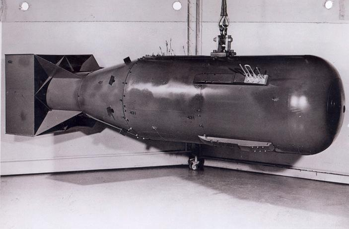

|  |
In 1941, he wrote the final draft of the MAUD Report, which inspired the U.S. government to begin serious atom bomb research efforts. He was the head of the British team that worked on the Manhattan Project during World War II. He was knighted in Britain in 1945 for his achievements in physics. In the great war, In Germany, Otto Hahn and Fritz Strassmann bombarded uranium with neutrons, and noted that barium, a lighter element, was among the products produced. Hitherto, only the same or heavier elements had been produced by the process. In January 1939, Meitner and her nephew Otto Frisch astounded the physics community with a paper that explained this result. As for his honours: Elected a Fellow of the Royal Society in 1927. Medal for Merit from the United States, Pour le Mérite from Germany. Foreign member of the Royal Netherlands Academy of Arts and Sciences in 1946 International member of the American Philosophical Society in 1948. Member of the Order of the Companions of Honour in the New Year Honours on 1 January 1970 for "services to science", and went to Buckingham Palace for the investiture ceremony. |